Photo credits
Every photo here is free to use under the license shown. Thank you to these photographers.
Photos are resized and colour-adjusted.
 Opening bowlSonny Mauricio · Unsplash License
Opening bowlSonny Mauricio · Unsplash License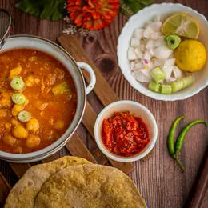
Amritsari CholeRimsha Noor · Unsplash License Paneer Butter MasalaKalyani Akella · Unsplash License
Paneer Butter MasalaKalyani Akella · Unsplash License Masala DosaPavan Reddy · Unsplash License
Masala DosaPavan Reddy · Unsplash License Dal TadkaRashpal Singh · Unsplash License
Dal TadkaRashpal Singh · Unsplash License Mumbai Pav BhajiPavan Reddy · Unsplash License
Mumbai Pav BhajiPavan Reddy · Unsplash License Gulab Jamunjaikishan patel · Unsplash License
Gulab Jamunjaikishan patel · Unsplash License Vegetable Pad ThaiMarkus Winkler · Unsplash License
Vegetable Pad ThaiMarkus Winkler · Unsplash License JapchaeRyan Kwok · Unsplash License
JapchaeRyan Kwok · Unsplash License FalafelAnton · Unsplash License
FalafelAnton · Unsplash License Veg MomosAbhishek Sanwa Limbu · Unsplash License
Veg MomosAbhishek Sanwa Limbu · Unsplash License Avocado Cucumber MakiOmer Taha Cetin · Unsplash License
Avocado Cucumber MakiOmer Taha Cetin · Unsplash License Vegetable Spring RollsBudi Puspa Wijaya · Unsplash License
Vegetable Spring RollsBudi Puspa Wijaya · Unsplash License Pizza MargheritaAurelien Lemasson-Theobald · Unsplash License
Pizza MargheritaAurelien Lemasson-Theobald · Unsplash License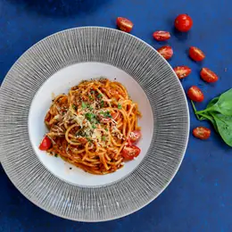
Spaghetti al PomodoroVinn Koonyosying · Unsplash License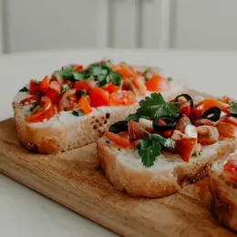
Tomato BruschettaMargarita Zueva · Unsplash License RatatouilleMarjan Sadeghi · Unsplash License
RatatouilleMarjan Sadeghi · Unsplash License Greek Saladwilliam wallace · Unsplash License
Greek Saladwilliam wallace · Unsplash License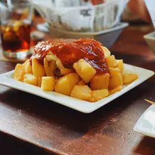
Patatas BravasNacho Carretero Molero · Unsplash License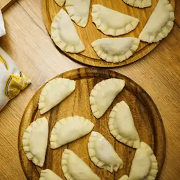
Potato Cheese PierogiJakub Zerdzicki · Unsplash License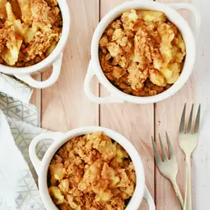
Apple CrumbleJosianne Pinard · Unsplash License Koshariحامد طه · Unsplash License
Koshariحامد طه · Unsplash License Jollof RiceUmair Ali Asad · Unsplash License
Jollof RiceUmair Ali Asad · Unsplash License Vegetable TagineDenis · Unsplash License
Vegetable TagineDenis · Unsplash License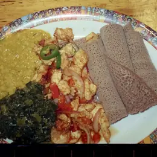
Misir WatBrooke Balentine · Unsplash License Vegetable CouscousDaniela · Unsplash License
Vegetable CouscousDaniela · Unsplash License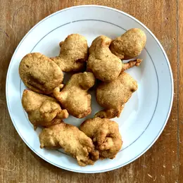
AkaraSamuel Agyeman-Duah · Unsplash License Chickpea TacosChad Montano · Unsplash License
Chickpea TacosChad Montano · Unsplash License GuacamoleZoshua Colah · Unsplash License
GuacamoleZoshua Colah · Unsplash License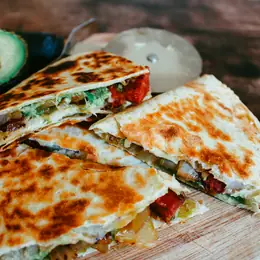
Cheese QuesadillaLottie Griffiths · Unsplash License Mac and CheeseLeanna Myers · Unsplash License
Mac and CheeseLeanna Myers · Unsplash License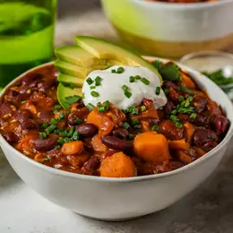
Three Bean ChiliSvitlana · Unsplash License Eggless Maple PancakesMae Mu · Unsplash License
Eggless Maple PancakesMae Mu · Unsplash License Cheese ArepasLeila Issa · Unsplash License
Cheese ArepasLeila Issa · Unsplash License Cheese Corn EmpanadasAnton · Unsplash License
Cheese Corn EmpanadasAnton · Unsplash License Andean Quinoa SaladMariana Medvedeva · Unsplash License
Andean Quinoa SaladMariana Medvedeva · Unsplash License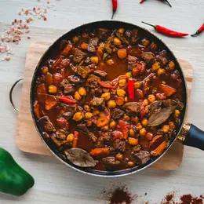
Veg FeijoadaArtur Kornakov · Unsplash License BrigadeiroFelippe Lopes · Unsplash License
BrigadeiroFelippe Lopes · Unsplash License Damper BreadFinbar.concaig · CC BY-SA 4.0
Damper BreadFinbar.concaig · CC BY-SA 4.0 Anzac BiscuitsMay Lawrence · Unsplash License
Anzac BiscuitsMay Lawrence · Unsplash License Fairy BreadGemsling · Public domain
Fairy BreadGemsling · Public domain